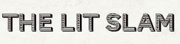
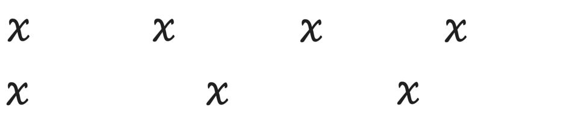

E-Book published June 2015 in association with The Lit Slam. The Women of the World Poetry Slam and WOWPS are trademarks of Poetry Slam, Inc and used by arrangement with PSi.
All poems ©2014 their respective authors, used with their permission.
Alight Anthology ©2015 The Lit Slam. Distrubuted through Button Poetry. Poets retain all rights to their poems outside of those rights needed to produce and distribute this anthology.
This E-Book is offered without charge, on the condition that it is not resold or repackaged without the written consent of The Lit Slam.
Cover Design: Kate Kinsey


All poems were selected by audience ballots during the 2014 Women of the World Poetry Slam in Austin, Texas 2014, March 19–22, 2014.
Editors: The People and Poets of Austin
Lit Slam Staff: Tatyana Brown, Derrick Carr, Jason Bayani
Lit Slam Event Co-hosts: Melissa May-Dunn, Caylon Dunn
Published in Partnership with Button Poetry
Special thanks to Tova Charles, Karrie Waarala, Karen Garrabrant, Harry Sampson, Christopher Michael, the host city (Austin, TX) organizers and volunteers, Jazz Coffee, and all the volunteers who helped make balloting possible at the festival.
Table of Contents
Dominique Christina - Emmett Till
Olivia Gatwood - To the Man Who Tried to Steal My Mother
Candace Liger - Genetic Disposition
Mary McDonough - Sewing Circle
Sam Rush - Elegy in 2:3
Zai Sadler - Crackhead Shuffle
Erin Schick - Stanley
Ebony Stewart - Anonymous Box Questions a 6th Grade Boys Group Asks Their Sex Education Teacher
Alyesha Wise - This Time
Christina Perez - Parlor
Sasha Banks - Jimmy Is Funny
Amaris Diaz - Under the Rain I Remember the Drowning
Amaris Diaz - Dear Privilege
Shyla Hardwick - Balloons
Imani Cezanne - The Hunger Games
Venessa Marco - Off White
Deborah "D.E.E.P." Mouton - Oli's Lungs
Lacey Roop - Purple Coat
Laura Welsh - Wonder
Dominique Christina - Karma
Megan Falley - Watching My Mother in the Mirror
Melina Filomia - Brain in a Vat
Cynthia French - Found Letter from the Cute Barista Girl...
Denise Frohman - Accents
Melissa May - A Cautionary Tale About My Vagina
Dominique Christina - The Period Poem
Janae Johson - 1998
Venessa Marco - Patriarchy
Melissa May - Symphony
Carrie Rudzinski - Babcia
Captain’s Log
The collection you’re about to read is an experiment in artifact creation, and artifacts are strange, in-between things. An artifact is both just itself—a remnant, a tiny piece of a larger and more complicated place and time—and also a diplomatic distillation of the past. It is a set of clues that cannot be figured out, only accepted as evidence. When you or I examine an artifact, we are letting it speak its history in half-erased sentences. It tells us that something happened to make it just exactly as it is, but it cannot ever all the way say how, or what, or why. To fully understand an artifact, we would have had to be there in the making.
In March 2014, hundreds of poets and organizers came together to listen, celebrate, speak, and be challenged at the Women of the World Poetry Slam in Austin, Texas. Over three days and nights of competition, of education, conversation, and careful practice, this festival/tournament lifted women’s creative voices to a place of honor that is rightfully deserved (but still radically significant in our current moment). Aspiring creators were welcomed by their predecessors and encouraged to reach further with fresh tools, genius was spoken and affirmed, new loves blossomed, old alliances took deeper root, laughter poured from roaring crowds, and urgent grief was aired and given tenderness and refuge. It was an intense, fruitful time (also, as with every unchoreographed event, an imperfect one, bearing its own intricacies and complexity) with a lasting impact on many in attendance. Over the course of WoWPS, thousands of people were touched by the craft and passion expressed on its many stages.
The 2014 Women of the World Poetry Slam made a kind of history, and even though the tournament is an annual event, the competitive element holds only a fraction of the gathering’s true significance. By bringing The Lit Slam to WoWps 2014, my crew and I sought to create a collection that might deliberately capture and preserve at least some of the brilliance expressed at the festival. In addition to holding our own late night side event, we attended every slam in the tournament and asked each audience a simple (but by no means easy) question: Of all the poems you heard tonight, which ones are your favorites? Which would you want to read again and again?
The pieces with the most votes were then solicited and compiled into this anthology, alongside the winners of The Late Night Lit Slam at WoWPS. (Our event worked like a typical slam, except the judges are treated as “Editors” and asked to evaluate the poetry they heard using the same question we asked audiences at WoWPS). The hope was that this collection might give future readers a sense of the experience at the 2014 Women of the World Poetry Slam in its totality—a shared footprint for poet and audience, and the living organism they come together as for one night at a time.
As the steward of this collection, I have to accept that so much is lost in the translation from moment to artifact. The screen you’re reading these words on will not convey the transcendent electricity of a poet’s voice as it breaks through to catharsis, nor the shocked breath of silence that naturally swallows her audience between her final line and their erupting applause. These are the last lines that drew that applause. What I have to offer you here is not the heat of the bodies packed into the bars and theatres of Austin, their pulses quickening as they listened, rapt, nor the sweat shed in earnest effort and bravery by the women onstage. Still, printed here, these poems have their own heat. Alight is not the countless tiny moments that made the audience fall in love with each poem collected herein—the fist raised in defiance, or the relieving embrace of laughter at a crooked joke at the exact right time. And while it doesn’t explain or describe its origins, Alight was forged by all of these factors. It is a written record of the art that felt unforgettable to the people who shared this experience, though the forces that made it so are now phantoms. If you weren’t in the room, you are being presented with an unsolvable mystery.
And yet I believe it is enough. Having spent painstaking hours collecting , formatting, and wrestling with these poems, my crew at The Lit Slam is nothing short of honored to present this dynamic sample of poetry from the 2014 Women of the World Poetry Slam. We are confident that it will serve its purpose in giving you a glimpse of what was so tremendous the nights these poems were selected. In that pursuit, I can’t help but hope that as you read, you might imagine the moment each piece met the air aloud, and that you let yourself feel included in each piece’s audience, because in making this book happen, we meant for you to be there. We all but saved you a seat in the front row.
If there is anything WoWPS and Alight have both reminded me of again and again, it is that putting attention on the work of marginalized voices speaking as they must (which includes all subjects and rhetorical approaches—silly and sad and angry and anything else that can be dreamt up) is the fastest way to access a sense of humanity, and possibility, and what it really means to be free. So, should you find at least one thing in this anthology that inspires you (and, considering the breadth of poetry represented in this collection, I imagine that is practically guaranteed), I encourage you to accept it as confirmation that you would also be inspired by the tiny historical moments of finely created and curated local poetry shows the world over—including your hometown. Use this as an excuse to find more art worth being changed by and adoring. Let this collection lead you to listen to (and read) more poets—particularly the woman-identified poets you might otherwise (due to the mechanisms of violence and oppression in our culture) pay less attention to or out and out ignore.
Four-Minute Round
Emmett Till
In this photo, he is laughing.
There is no cotton gin tied around his waist.
He’s not stretched into swollen limbs.
His eyes are still hazel and recognizable.
Two neat white rows of perfect teeth sit
totem-like in his mouth, and the world
did not know him because he had not
been murdered yet.
He’s still slipping into the kitchen
to get another piece of cornbread
while his mama ain’t lookin’.
He will mash it with his fingers, drink
some buttermilk and smile with those eyes.
They are still hazel and bright, like stars
in uppercase, and ain’t nobody
gouged ‘em out or shut ‘em closed
and when he goes to school,
he’ll do a silly little dance with his arms
and legs cocked out at odd angles,
and his classmates will laugh and there will be
no cotton gin tied around his waist.
In the next photo, he’s proud of the hat on his head.
You can see that by how straight his neck is.
His Mama is in the picture, and they got the same face
and his head is high and perfect and ain’t no bullet in it
and it will be months before there is one,
and in those months he’s still his mother’s child…
The smug and overfed manchild all Southern ladies
love to cook for, ‘cuz he licks the plate clean even
if there’s leftovers, he just eats and Yes, ma’ams
and makes you giggle so much you gotta shoo him out
the kitchen so you can get the pots clean and he’s
breathing and whole and
ain’t no men dressed like midnight with sunless, un-laughing eyes
snatching him out the door, changing everything when neither
he nor his mother asked to be anything other than
laughing in the kitchen with the greens still simmering in the pot.
The last photo of Emmett Till is a holocaust.
The picture that history concretized into the nighttime musings
of black children who hop-scotched above and below Bible Belt,
who saw a tattered, otherworldly version of the fourteen year old
Till, head poised strangely above a sharp black suit on the cover
of Jet magazine.
There were no eyes smiling.
Mischievous manchild wonderful, straight-necked
full-of-tomorrows-boy staring back into the camera.
What was there was not there at all.
What was there swallowed the world.
My mama was eight years old when they painted
Till’s image on the cover of a negro magazine.
Eight years old.
Pigtails, pinafores, pleats, and a heap of pretty girl possibilities.
And I know my grandmother set that book down with intention
on the coffee table, knowing her baby girl would see it
and then know what should not be known but what must be known.
This is what they did with an adolescent mistake.
When a fast-talking, finger-snapping negro from up North
brags about big city white girl honeys with rosy lips and no Jim Crow,
It is an image I shoved at my fourteen year old son,
frenetic in my attempt to tell him that this is black history.
I need him to know
if he’s not careful, not brave,
not the sum total of all our unlit courage,
if he relegates these stories to Cliff’s Notes,
he bleeds out and dies in the epilogue.
I need you to know Salih, that my arms will never
be wide enough to cover sins like these,
that your head, held so high, is still a cautionary tale.
But go on and do it anyway, son. And laugh,
and dance with your arms and legs cocked out
at odd angles and slip by me and get the extra cornbread
whenever you can, and be grateful that when you
and your friends say something slick about the pretty blonde
girl in the front row of algebra, you are permitted that levity
after four hundred years of midnights,
necks decorated in nooses, plantations
that dressed up terrorism in white
lace gloves and mint julep.
I tell my son to remember Emmett Till
when his head was still high, his eyes still hazel.
Remember how high he held his head to celebrate that new hat.
I tell my son that I will be his mother all the days of my life.
That I will celebrate his brown boy buoyancy.
And while I do not know what tomorrow holds,
I know he will never be strange fruit,
Will never be broken open,
Will never be strung up,
Will never be hog-tied,
Will never have his face, so like my own,
Crushed, mangled.
I am growing these limbs for you, Salih.
To get around you, and surround you.
and we will be strong…
and unapologetically black
for as long as we can be.
To the man who tried to steal my mother
It is hard for me to look
at a family photograph
and not see you
in the background.
You sit
in my father’s wrinkles
and my mother’s unsure smile.
You are prying their bodies apart
with your late night phone calls.
I have never known your voice,
but I can still hear you
calling me a firecracker
She’s just like her mother,
you say.
I cannot tell you how many times
I’ve laid awake at night rehearsing
what I would do if I ever saw you
on the street. I have rattled this
scenario on replay over and over,
pushed myself to the edge
at the thought of your touch,
stared at the bones in my knuckles
for countless hours, wondering
how much damage
I am capable of causing.
If I ever saw you on the street
I would probably forget everything
I was supposed to say at that moment.
And you would not know who I am.
But if you looked closely,
you would see my mother’s gapped teeth.
You would see her skinny legs and oval face,
you would see her in my crooked fingers.
If you looked closely,
you would know I am the daughter
of the woman you tried to steal.
I have watched you in the emails you sent her,
stared at the return address of the gifts you mailed.
Looked up bus prices to see how much it would cost
to show up on your doorstep and tell you
everything my father wishes he could say.
I knew your name
before you even knew your lover’s child.
I knew it was you in the lace,
in the black,
in the silhouette dress.
I know what you like in a woman
and that woman is not your wife.
I know why you loved my mother.
I have watched my dad love the same things
on the hammock in the backyard.
He holds her face like a ripe plum,
and smiles into her.
When he looks at her, he sees youth.
The woman who showed him the mountains,
who made him believe in loving someone
with every ounce of your own being.
The woman who gave him a family.
When he looks at my mother, he sees me.
But Calvin,
what did you see?
Did you see the awkward car ride home
after we picked up your scent at the airport?
Or the rock that sat in Daddy’s throat
when he smelled you?
Did you see that?
Or did you just take the woman
who was too fragile to carry
her own backbone and smother her
in your heavy compliments?
She still walks with broken knees
and touches my father as though he
will crumble at any moment.
Our home has become a pile of sticks
in an empty plain where the slightest
reference of your relations will
send us into a fucking windstorm
I never speak of the town where you first met her.
I don’t complain about the boy who cheated on me,
or the politicians who are screwing the housemaid.
I give bad reviews to movies with infidelity
in their plot lines and swallow my gushing
of beautiful love stories hoping they
will never be reminded of you.
You are the blister on my family’s tongue,
so when you decide to make another appearance
in this crooked frame, this autopsy of a household
on this eggshell bridge of a doorstep,
don’t go looking for my mother.
Genetic Disposition
When I was four, I taught myself how to eat
the entire world. It took me until six to find out
what flavor the Mississippi Delta wind was.
And much like any place in the South, the aroma
was intoxicating with dead bodies and Bibles.
My father—a man with branches for arms,
poetry as magnolia flowers, and roots forming
his insecurities—taught me early that leaving home
wasn’t as hard as biting his own bark.
He wrote poetry. Simple and humble.
And every Valentine’s day I would receive his Love
shiny enough to reflect my scars.
With age, the poetry became alive.
With age, he became closer to death.
and eventually it became too hard to digest.
My scars were displaced
in soil. Love bled in and out
of our lesions. We all learned
to use knives to cut away pain
And when daddy’s poetry became
nothing more than a drunk stagger,
I mutilated the memory on my body.
At 13 I stopped writing. Never for lack
of inspiration. Maybe a lack of desire
to convert another storybook into a riddle.
I watched in silence. I watched his body
eat its own existence. Always using scars
passed down from generations
of dystrophy and disease.
Some say that some old lady placed a root
on his grandfather that passed down generations
and plagued every child with illness and creativity.
It didn’t take long for me to notice
how quiet the world became
to someone who wasn’t finely broken like the soil.
By 18, I lost my virginity on the fourth of July
to man who never heard a woman scream.
I blame that on my legs.
Whatever voice I had was a stitched wound
over his ego. Between his fireworks
and my daddy’s wheelchair,
I can’t recall which one
protested God’s physics.
I didn’t want to remember he existed.
He, barely breathing and muffled in voice,
tried desperately to force the sounds
from his throat into a poem.
But all I could ever hear was the sound
of his inferior genetic makeup.
These scars aren’t a testimony
of rebellion, but rather what’s left of years
of closed eyes and misunderstood looks.
My scars lay on his deathbed.
Before I could kiss his forehead
I couldn’t help but think
that if my scars reflected his,
would I too have Lonely drifting from my eyes?
Would I be sensitive to the heat of the Sun?
Would my voice be strong enough to whisper
I love you in my daughter’s ear,
or would I be forced to eat myself whole
until I was vegetated and still hungry?
I prayed death to him.
My soul could no longer hold
his deterioration of body,
though his mind was intact.
I missed his poetry.
Those words.
I missed his height…
And his weight…
And his voice.
Tell me that you see my scars
and the pieces leftover from them.
I’;ll write my poetry,
type it loudly on keyboards
Hoping to recreate any sound like
I once heard from my father’s woodwork.
Sometimes with my eyes closed, hoping
I would see him on Valentine’s day,
when love knew no funny gestures
or awkward shifts in conversation…
When the world didn’;t look so much like one needle,
and a million bleeding wounds. When I was flawless.
And I guess that was when you were, too.
For now, we all should feel lucky.
Our bodies can still hold all the pieces
left over from planets crashing into space.
Lucky we have legs
and eyes and a voice.
If you want to know how I got my scars,
open them all and ask me.
Sewing Circle
Legend has it, my great-great-grandfather killed men for the Union. A sharpshooter. It’s said he returned smelling of solvents and rotten bone. Only able to steady his sights long enough to shoot rotgut. His hands trembled, so he balled them into fists. His wife trembled, so he balled her into a fist. A hard snarl of rage and bone curled up on their bed.
One night, my great-great-grandmother and her sisters sewed him into his sheets as he slept. Six pairs of fists curled around a familiar instrument. His fate, stitched by every tooth he knocked out of her. They sewed him into his sheets & beat him with a bat.
When he regained consciousness in the hospital 3 days later, my great-great-grandmother looked into the eyes of my great-great-grandfather & said, If you ever touch me again, I will kill you.
Sewing: The domesticity implied in its mastering, the definition of women’s work. Embroidery samplers originated in the 15th century, a test of skill. The only time a woman would write or read her own name before it belonged to her husband. I read the news & my hands teach themselves to sew. Headlines are ugly patterned embroidery samplers threaded into the statistics of neural pathways.
Like I know, as you know, 1 billion women have been victims of gendered violence.
Sewing circles came about in towns where war had robbed every woman of her husband or her brother or her son. And right now there is a country full of women, three times the population of the United States, that have been robbed of their autonomy, their dignity, their faith.
So, this is an invitation to a sewing circle.
Can you imagine the sound of 1 billion pairs of hands sewing?
Our needles: as ancient & as common as vertebra.
Our stories: decaying family heirlooms hung in dusty hallways.
To be a woman is to be a wedding quilt on a child’s bed.
I am the warmth the you sleep beneath
without ever having to understand the labor inherent in its creation.
Sometimes I want to sew the world into its sheets.
I want to beat it with a bat until the warning sticks
like blood to linen. My sisters & me, bats & bricks
& beams in hand—can you imagine: every rape choking
on its own teeth. Every catcall and roofie a detached retina.
Every red light district a collapsed lung.
Would they still rape us if they knew our cunts
were made of sewing needles?
Would they still rape us if they knew our skin
is a spool of thread dipped in broken glass?
I want to sew the world into its sheets
I want to sew Steubenville into its sheets
I want to sew Juarez into its sheets
I want to sew my own self-hatred into its sheets.
This is an invitation
& this is a warning.
We are starting a sewing circle.
Elegy in 2:3
“Polyrhythm” describes the simultaneous sounding
of two or more independent rhythms.
2:3 polyrhythm combines a rhythm of 2 beats
with a faster rhythm of 3 beats, which cycle in
and out of sync for the duration of the piece.

You tried to teach me beats
in a parking lot
after we tried to fuck
in the back of a truck
in a parking lot
after I told you it might be
my first try and you told me
that you wanted it to be special
then I told you I just wanted it to be over
and you tried to teach me beats after we succeeded
on the shores of Lake Mead
after you handed me beers and lube
like it was a dozen roses
it was a sweeter gift
than a dozen roses
you said you’d looked up
“how to fuck a virgin the nicest way”
that your friend told you
“if you’re gonna be somebody’s first
you’ve gotta be good to them
cause then they’ll never get over you”
and somehow that was kind of sweet too
and then you tried to teach me beats
like 2 on the left hand
and on the right hand 3
but I could never quite syncopate
the two sides of me
enough to keep steady
so I just watched you drummin
on the shores of a lake man made
and a dam made to impress alien
we both knew I would leave
and I don’t know what I said
when you told me that you loved me
but I don’t think it kept very good time
five years after my leaving
one after you ripped yourself
from the skin of the world
I lay back on an overpass in Poughkeepsie
and basked in the fact that sound
waves never really disappear
they just get wider
wondered why there were suddenly
two beats in my hands separately now
as if you’d somehow
ripped them apart
when you left holding one
holding 2 on one
and 3 on the other like
3 months after your passing
I forgot what to name the street
couldn’t hold them
as anything other than the ground
that had lost hope of ever knowing
the soles of your feet
I sat beneath them
in a million broken light
laying down beats for fireflies
losing time
to make sure they were still fireflies
and not simply the lit cigarettes of ghosts
I told myself I was crazy
3 times for every 2
I wished you would hear me
told myself there was nothing
3 times for every 2
I hoped you were near me
told myself to be honest
to see what’s real
then forgot to know how
in the months after you gave up
on this life I drowned
in the streets I had forgotten not to call rivers
I told myself I was crazy
3 times
I told myself I was crazy
3 times
I told myself I was crazy
3 times when I told you I love you
3 times for every 2 that I’d missed
3 times for every 2 that could have made a difference
everybody’s got a first time everybody’s got a first love
and someday everybody learns that growing up
is a heartbeat fading
before you tap out the rhythm of its name
if you could hear me now.
Crackhead Shuffle
So there’s this new dance. Its called the crackhead shuffle
A not so subtle, not so simple dance with one step: Move,
move to the best block, move to yo’ next rock. Rock and
nod a bob, but can’t stop, won’t stop, like the Roc
but the only thing that rocks this fella is a hella fire
internal beat, that won’t let his hella tired feet cease from
singeing sorry streets soured with smoke and shame
lames who let the game play them. Those who probably
let the 80’s pay them. And now they’re paying for it
Mama said, “Everybody’s got a dancer in the family right?”
One that can two step around twelve. Who tap dances in shoes
he only intends to sell, but he digs blues. And jazz,
and rap, and rock. Yeah, nothin’s like rocks.
That shit will knock your socks off. Like great sex.
Like cheap latex. It can bust and break and birth
new generations stuck singing the same song. On the same
station. Searching for a rhythm that resembles that first fist fight
with your father. That first time you ignored brother and stole
from mother. That first fix was was supposed to fix all that.
Did it? Did it?
Now you’re stuck shuffling your two left feet
searching for a dream of a life thats just in your reach
like toothbrushes and toothpaste. Trying to scrape the sickening
taste of regret from the roof of your mouth. But you don’t remember
much about roofs or rules ’cause since Mom’s kicked you out.
Since my moms kicked you out, you been out here dancing,
just getting by, and shit, family, all I don’t get is why.
Why jig to a tune that makes your mama cry? A do si do
for this dough, for this bread. But you don’t eat
just keep bobbing your head. Held up way too high
on your skinny unstable shoulders sits a boulder born of a rock
that you love to listen to. A habit to huge to fit on any compact disc.
But this ain’t a diss, just a soundtrack to a story I’ve heard
one too many times. A song from which we know
one too many lines. And none of ’em rhyme.
None of ’em make sense. Like the dollars and dreams
I know you have wasted. And it’s sad.
So fucking sad. And it always had me wondering,
where do crackheads learn to dance like that?
Stanley
The first time I took a life,
my hands were earthquakes
of guilt, of doubt, of fear.
I held the knife to his throat.
Wonder what he saw
reflected in the blade.
I cut into his neck
as his eyes met mine.
He didn’t say a word
as the blood began to spurt.
He didn’t say a word, but I know
what he wanted to tell me. He said,
My name is Stanley
I have lived a good
and honorable life.
His name was Stanley.
He lived a good and honorable life.
Woke every morning long before the sun
to proclaim to everyone in a five mile radius,
Good morning!
My name is Stanley.
I am a rooster!
My name is Stanley.
I am a good and honorable rooster!
Good morning!
Unlike most roosters, who hatch
from their shells screaming,
Hey there motherfuckers!
I’m a motherfucking rooster!
Stanley spent the majority of his life
thinking he was a hen.
I can’t say I blame him.
He wanted to be one of the girls.
He wanted to fit in.
Until one day, something changed.
There were feathers where previously
there had not been feathers, like he
was suddenly reminded of his position
of privilege in the poultry patriarchy,
turned to the hens as if to say,
Goddamn!
I’m a rooster!
Did you know that I’m a rooster?
Goddamn!
My name is Stanley and I am a rooster!
And what a rooster he was.
He took on his new job with such pride,
gathering grass and grain to distribute
amongst the hens in their nest boxes,
quelling domestic disputes
taking up a daily guard post
of constant vigilance to protect the flock.
He tried to protect the flock
the day the neighbor’s dogs attacked.
He was a whirling dervish of green
and crimson feathers, sounding the shrill alarm,
drawing attention to himself for as long as possible
to let others escape to safety.
The dogs were called off seconds before capturing Stanley.
For two days I carried him to and from the henhouse,
fed him by hand, cleaned his crusting wounds.
When it became clear Stanley
would not recover, it was up to me
to kill him. Me, the 16 year-old farm-sitter
in rain boots and a sweat stained t-shirt.
Me, pulling the slaughter knife from the cabinet
where it was kept out of reach of children
like me. Considered more than briefly testing
its strength against the softness of my own skin.
Wondered out loud if I might survive the slaughter.
I cut off his head,
buried his carcass
in a black plastic bag.
I killed him.
Stanley, the good
and honorable rooster.
I wonder,
Who will it be to hold that knife to my throat?
What will I see reflected in the blade?
Will it ever be more than relief?
One of these days,
I will stand before god.
What will I tell her
when she finally admits
I was meant to be a man
(but when she learned
I was born to climb mountains,
she knew the women needed me more)?
When I stand before her
with Stanley on my shoulder,
will he tell me I set him free
to follow his flock to heaven?
Is he now the rooster in the henhouse of god?
When I stand before her,
will I be a woman?
Will I be a man?
Will I finally belong?
Will I ever be able to tell her,
My name is Erin.
I have lived a good and honorable life
Anonymous Box Questions a 6th Grade Boys Group Ask Their Sex Education Teacher
Mz Ebony,
If you don’t have a condom can you use a plastic bag?
No. Plastic bags won’t protect you from STD’s or prevent pregnancy.
Mz Ebony,
Can a girl get pregnant if I put my Peter in her ear?
No. That was an episode from Family Guy; not real life. Also, in this class, we will only use medically correct terms.
Mz Ebony,
What’s another word for balls?
Testicles.
Mz Ebony,
Why do girls scream when they have sex and what if the bed breaks?
Women and men make noises during sex as a pleasurable response, in most cases. This is normal and okay.
If the bed is not sturdy, then it could break, but hopefully no one gets hurt.
I am trained to answer these questions.
But sometimes I wanna say:
If there is a girl that will allow you to put a plastic bag inside her, this is not the girl for you.
Ejaculating into someone… anyone’s ear is gross and confusing, because WHY WOULD YOU WANT TO DO THAT!?!
You could say nuts, tea bags, sac, beans, boys, friends… but who the hell is Peter!??
And all women don’t scream, because not all of us need to. The question you should be more concerned with is “How will I know if she’s faking or not?”
But none of the above has to do with the bed breaking!
But then there are questions put into the box
with Tim’s name attached as true as the Sun
admits it’s a star, with print as small
as the signature of a gnat. Evenly folded
to show me how careful I have to be
in answering his questions:
Mz Ebony,
Why does liking the color pink make me gay?
And if I am is it bad?
And I immediately wanted to show him
how to be camouflaged; how to give up
his shadow and become a closet;
that they have picket signs and slanderous
tongues shaped like swords of malice made
for cutting; that we all have a certain type
of prejudiced bully inside us…
You boy, must not believe in being out-casted.
And that blue, blue is more fitting
for the sinking emotions you might feel,
or to show the life span of your bruises
that haven’t quite healed, yet or the color
of your iris before a piece of you turned grey.
Tim, with all of his 206 bones,
17 of them reaching for me in his eyes,
looks at me the way he does hope
and the ability to love outside of himself,
is waiting for an answer.
So, I say, You can be a pink Spider Man
if you want to, a bow tie,
a cupcake with pink insides,
just as long as you’re a heartbeat.
Preference and colors are attached to emotions,
so you should do what feels good.
You gotta be willing to be brave enough
to be the only one who knows you’re afraid.
Bad is hiding inside yourself.
Bad is someone judging you by what they don’t understand
or in which direction your heart goes, when love is supposed to be
a good thing that you shouldn’t have to control, or use
a cookie cutter to recreate; that love can be a person, place, or thing
and any action you can wrap around that special person
that makes your heart explode when they walk into a room.
There is no skull and crossbones over your heart.
You are a good thing that someone will be dying to get next to.
And there is no shame
in that.
This Time
...there will be a celebration.
They will speak of deliverance, say
God is good, as if She wasn’t the last time.
This time, there will be talk of babies
out of my vagina—as if babies couldn’t
come out of my vagina before.
My mother will pick up the phone,
call all of her friends—proud.
Make plans for a dinner party
I am not invited to.
This was never about me.
This time, they will rejoice.
Ask about marriage plans
before they memorize his last name,
but at least they will memorize his last name.
My friends, the straight ones,
will utter violent words, say
I’m glad you no longer think you are a man.
And with all the pain shooting from my toes,
I’ll want to yell out: No! I never thought
I was a man, but being with a man
doesn’t make me feel any more like a woman!
This time, my friends,
the not-so-straight ones,
will utter violent words
at dinner parties and rallies
which I am no longer invited to.
This was never about me,
and when they are forced
to look me in the eyes,
they will keep their words
tucked in a safe space,
smile, and say, It’s ok.
Sexuality is fluid.
They will strip me
from every poem, protest.
They will not ask me if he is a phase.
My straight friends will say:
Girl, I knew all that was a phase.
I will be an animal in the middle
of a caged ring while they all stare,
fixated on the phase that fits them best.
They will cheer me on—They will cheer me off.
Both sides will make me an example
of what not to do.
But my father.
Oh, my father.
This time,
like the last time
and all the times before,
he will pick up the phone,
proud. Ask, Are you happy?
Good. Now, how was your day?
I wish they could all be like my father.
I wish they would all wear their judgments
like love. Then maybe they would understand
why I always wanted to fit into my father’s pants.
There is something about love without much restriction,
something about love without many rules and regulations.
For I can recall wanting to punch a girl for trying to kiss me,
buried beneath secret tongue taps until my fist bloomed
with the first pussy in front of my eyes.
That moment, I plucked most of my fears away.
And I can recall a man telling me
that I just didn’t find the right one.
And I wanted to punch words into his face:
If only you knew what women put women through,
you would not sound so stupid!
And I can recall, not too long after,
when my fist hardened with the first
male erection between my thighs
in eight years. And as we released,
I still wanted to punch that man in the face.
But I released so many wasted moments,
infuriated towards those who have only
experienced love in limited forms,
who haven’t swallowed feminism.
We have all taken fear deep in
the back of our throats, knowing
very well it is what we all really taste like.
With all the experiences shooting from my chest,
I want to yell out: This transformation does not
define this womanhood! It defines the power
to adapt to any love that shelters!
Houses this heart!
Feels like home!
That only light can build,
but no stone can break
One-Minute Round
Parlor
(From the spider to the fly)
Oh, hi! Come in, I’m baking.
Saw those eggs you laid next to Apt 209,
up the nostril of that road-killed raccoon.
I’ve been watching you.
I have a last batch of babies myself.
Have a seat. Cookie?
Yes, this couch is silky soft—
busy incubating embryos!
I admire your green figure.
Those scarlet eyes shine so metallic,
I can almost see this old widow’s
red corset in them.
Your pretty wings have a rip!
Here, come sit a little closer.
My sewing kit has just the thread.
Whoops! Sewed them together!
Oh, quit jerking your buzzy bottom.
You’re messing up the spinning
casket pattern I got from Better Homes
and Garden Magazine.
Don’t be so surprised!
My kids need something extra to snack on.
You know I am a bloodless creature.
You, with your eight hearts to spare,
you know I’d do anything
for my children.
The Lit Slam at WOWPS
Jimmy Is Funny
… and all the girls laugh like rattled chains.
And you are twelve and laughing at Jimmy,
hoping God will be sweet. Let you be the sweat
sticking to the shadow of his red hair.
Meagan whips each ribbon of blonde over her shoulder.
Susie’s disappear behind her ear.
The cornrows stitched to your scalp say girl,
you just ain’t that lucky. Suddenly,
your body is a cathedral of no, shouting at the joints.
This is the day you are found by your body.
This is the day its black stops hunting you.
You, the skeleton on the playground,
laughing at white boys without her skin on.
Jimmy wears khaki shorts. Every day.
Your brother made bloody jigsaw of a white boy’s jaw.
Jimmy eats peanut butter and jelly with the crust cut off.
You know all the words to “Cop Killer.”
Jimmy tells the one about the crow that flew into the country club.
Your grandmother’s whole body was swallowed
to a whisper named “mammy” that drowned in the spit of white babies.
But Jimmy is love licked all clean of 6th grade silly.
You are still laughing. You pray for your name in his mouth.
Look, Jimmy. This blood looks just like yours, and so what
if it screams just a little bit louder. This brown is a small thorn,
but this love is all the mercy.
Jimmy tells the one about the crow that flew into the country club.
You are not the song he is singing. You are the shadow
poured into the white space. His eyes blue-eyed blade you;
whittle you down to frat boy small talk, Jaeger shots from now.
They are still laughing. Your body has tricked you into giving it weight.
Jimmy tells the one about the crow that flew into the country club.
No one touches it.
No one wants to wash their hands twice.
And Jimmy is funny.
Jimmy is so, so funny.
Under the Rain I Remember Drowning
I still don’t know how to trust
like you. How to dare the truth.
Coax the palm open. Convince
the ocean loud. How we stood
naked, wide-eyed as the saltwater
swallowed our fear. Do you
remember the first cigarette
I will never finish smoking?
That morning you said you’d
create a religion if you could.
That we might all survive.
Amen. I’ve yet to trust invisible
so completely as you singing
“Stormy Weather.” I’ve never
drowned in a voice that way. Never
wanted air less. Never understood
more than watching the red disappear
from your lips. You walked over to me.
Unraveled the distance. My whole body
silenced by the downpour.
Listen. It rained today. The kind
that never stays long enough.
DEAR PRIVILEGE
Dear anger,
Thank you for making me speak up.
Dear White Student Union,
I am sorry I have taken so much of your privilege
that you think you are struggling
to hear your story told in this nation.
I am sorry that you mistake diversity for genocide.
Dear White Males who believe
they are the victims of rape culture,
checking your privilege is not attacking you.
Please understand that calling rape culture women’s paranoia
doesn't erase the violence.
Dear men,
Calling me a bitch, slut, angry feminist,
does not help the way I perceive you.
For the record: I’m angry.
Dear smiles I get while wearing makeup,
You hurt worse than the stares.
Dear men and women and your stares,
I do not owe you my biology.
My mascara. My shaved armpits.
My breasts where you think they should be.
Dear body, I apologize for ever believing I did.
Dear body, I am sorry I have refused
your grace for so long.
Dear sky, what do we look like from here? Do we look pretty?
Dear moon, do you even know what pretty is
supposed to look like? We measure ourselves
against your beauty, not realizing you are a rock in the sky.
We think everything has a mirror to be afraid of.
Dear dirty looks I get while holding my boyfriend’s hand,
I know you know what pretty is supposed to look like.
Dear pretty, I don’t want you.
Dear world, I wrote this poem while naked.
This is me not apologizing.
Dear light skin, you make being Latina less dangerous.
You make me take responsibility for my history.
Dear accent that comes out when I’m angry,
Thank you. Just thank you.
Dear gay marriage protesters,
Do not say the word love around me.
Dear Straight White Male professors,
What do you mean when you say "we"?
Dear Professor Haeberlin,
Please stop rolling your eyes
while I discuss representation in your class.
Dear Professor Haeberlin,
If a person of color tells you
you are being insensitive,
you are being insensitive.
When did laughing at my name
become part of the curriculum?
Dear Professor Haeberlin,
My name is not yours to edit.
Dear assimilation, I am not yours to edit.
Dear men who only speak in compliments,
You are not needed.
Dear comments about my appearance
or lack thereof, nothing of mine is for you.
Dear women,
We are on the same team. I promise.
Dear Feminism, I am sorry I ever hesitated
to say your name.
Dear I HEART BOOBIES bracelets, please stop
sexualizing a fight with death and instead
congratulate a survivor.
Dear movies, I am not impressed with your ability
to reduce race and gender to jokes.
Dear jokes, I refuse to be your punchline.
Dear everyone, YOU CAME OUT OF A VAGINA.
Just a reminder.
Dear shame, the following are a list of words
I will no longer whisper:
Vagina
Tampon
Cramps
Ache
Pain
Pain
Pain.
Dear shame, I’ve had enough. Thank you.
Balloons
My sister calls me.
There are balloons on the front porch.
She asks me: What you do when you’re afraid of your gut
feeling and there are balloons on the front porch?
When you can’t shake the ghosts that keep you up at night
When you search and find out a man got killed on
your block but they don’t say who. When you’re praying
the unanswered phone calls mean jail.
My sister calls me.
There are balloons on the front porch.
He was tortured in the basement. My sister now spends
most of her time wondering how long the hour felt to him.
If you asked him for anything he would have given it to you
or showed you how to get it, my sister says.
When someone is murdered the police can’t remove anything
off of the body. Couldn’t lock up the crime scene.
He had his house keys in his front pocket.
Later that day, a friend tells me that she worries
about her family dying in her home country.
I tell her: I can relate.
She tells me I can’t.
She says: If you’re in America, you are
automatically rich; automatically privileged.
I tell her: Not everyone in America gets to be an American.
When my sister calls, there are balloons on the front porch.
Two-Minute Round
The Hunger Games
A made up story about an annual event, in which
two people from each of twelve starving districts
are randomly selected by the wealthy
to compete in a televised battle to the death.
Now, don’t get me wrong:
The Hunger Games is my shit.
But I can’t help but notice
how painting poverty in white face
makes it fantasy—makes it fiction.
Makes a #1 selling novel.
A hit at the box office.
Guess bein’ brown and hungry
ain’t all that entertainin’.
Our stomachs have been wailing
since parched tongues licked
cornmeal mush off of fingertips,
dry and cotton plant cracked.
Since chitlins fashioned pig intestine
into to a delicacy. Since Tenforadollar
Ramen, boiled hot dogs, and pinto beans.
This game is only one sport in the Olympics
we call surviving. This story is not foreign
to those of us who know about fighting
to the death while governing bodies watch you,
neatly placing obstacles in your path.
We call it “crack rock,” “welfare,”
“the prison pipeline.”
You call it “entertainment,”
but The Hunger Games is my shit.
Is hood shit.
Black people are dying by the mouthful
at the hands of a government who recruit
the famished, train them, then call them “athletes.”
Meanwhile, Hollywood spends millions of dollars
to tell this story without us.
They call it “Panem.”
We call it “East Oakland,”
where the only white people
in the school are the teachers,
and the students have children
before they have boyfriends.
Call it “South Central,”
where domestic violence runs wild,
and you’ll hear the voice of God
before you hear the ambulance
that was supposed to save you.
Call it “Detroit,”
where a black woman asking for help
is means to shoot her in the back of the head.
Call it “Florida,”
where letting the bass drop
will get a car full of black men shot
and the murderer will only do time
for the people who survived.
Killin niggas ain’t been this fun
since 13-year-old Black boys
stopped whistling,
since brown babies hung
from umbilical chords,
the blacker the berry
the tighter the noose.
We’ve learned that bein’ hungry
ain’t all that bad when it means
you’re still alive.
Off White
They say I’m off-white, high yellow,
bright-bright, do all the passing.
They say, my body a light,
say, “real” black and brown be shadows
cast aside—grounded: an offering
to the wildest dark.
And I, strutting ‘round god-given,
like I’m god given.
Like god done gave me all this sky.
They say,
Us light skin women be church
"real" black and brown bodies
be four little girls—Birmingham black.
When you’re "culturally ambiguous"
the world thinks you as middle ground,
as unscathed, as no one’s daughter.
you pretty for black
you not black enough
you better race
you yellow bone
you exotic
you wifey material
Every brown girl will canvass thy face.
Claim your skin baptized, scarless
and holy ridden, a battleground of men.
They will make a sanctum
of where you cross,
remind you that, no matter
how brown you think you are,
you can’t sit at their table.
Every white girl will canvass thy face,
claim your skin a rude stain.
Think you as “not really black,”
light enough to ask of the unknown,
of all the things wondered & feared
I think you’re black but you don’t
look like the rest of them
How do you get your hair in a bun?
Do you wish you were either black or white?
It’s like you’re permanently tan, isn’t?
They will remind you that,
no matter how light you think you are,
you can’t sit at their table.
You ain’t eating their food.
You: a footnote, a bastard child.
You: mastah done grown weary
and fucked the field negro, now
you a house negro, all uppity
and stainless, shucking and jive’n.
Clean, that’s what you are,
golden baby,
no black boy lynched
gutted, peeled alive,
spewing from your breath.
Ain’t no black girl raped, beaten,
fucked alive.
When they look at you,
they do not see blood.
You are what made it,
a bridge of sorts,
the marriage between
murderer and quest,
You are at war with yourself
When they look at you,
they cannot see blood.
I think of my great great grandmother,
of her tired hands,
the way my hair is silly as hers.
What of your grandmother?
Of the hemp-knot round her nape?
Of her mutilated body?
When they look at you, they cannot see blood.
What a privilege,
to be a child of diaspora,
marginalized like the rest of ’em,
but too light to be thought to be
marginalized like the rest of ’em.
Go head, girl,
play that light skin violin.
Cry them light skin privilege tears.
Death ain’t coming for you
Death ain’t coming for you.
Oil Lungs
The week my daughter’s lungs started to develop,
there should’ve been a giggle resonating
across my abdomen at the thought
that my baby could finally breathe on her own.
Instead, I found myself wondering
how loud she would be able to scream
if someone touched her
with hands like chloroform.
Would her voice holler like a fire engine?
Would her lungs hold enough air captive
to power her body to dash, charge her
vocal chords with enough electricity
that anyone standing in a 5 mile radius
would feel as though they had been
struck by lightning?
At the offering of familiar candy
and an unfamiliar car,
would this daughter of mine
go willingly?
Or would she be able to do
what her mother was unable to?
Decipher in an inhale who to trust,
smell the dissolving powder
at the bottom of a glass of alcohol.
Know when their scent changed.
Know how to escape,
how to hold her breath long enough
to tuck and roll around the shuddering
shoulders of the 610 loop.
Had I given her
extra gills on the inside
just in case someone tried
to drown her—tried to shove
her on a ship in the middle
of the Gulf? Could she respire
well enough to make it back home?
I had already felt her fins kicking,
and I am saddened to report
that I didn’t think they were
strong enough.
I don’t want her to discover
too quickly the dangers of being silent
the consequences of words caught
in her trachea with not enough courage to
push them out.
Had I shown her how to shove
a banshee into the black box
of her throat—a siren in every sinew—
that at a grabbing, an inappropriate caress,
she could keep herself from becoming an odyssey?
Would she be able to sustain her pitch
long enough to melt Odysseus’ beeswax?
When seduction tries to convince her to come hither,
will she know how to flip the switch, stretch her
larynx into a lyre? Would she never know when to give up,
Steer them into a rocky demise?
Had I shown her how to be persistent
when the tide rises?
How to load her windpipe like a shotgun
and buckshot when need be?
It’s my job to teach her
that living on the Texas coast
makes her an easier commodity
to traffic, so I pray she is learning
to land lock her voice, build
her esophagus into a bell tower,
know when to ring.
Know when to scream.
My job to tell her that just because
she is a woman, her No’s may sound
like a foreign language some people
may not be willing to translate.
But if she bellows, if she shapes
her duodenum into a gong,
swings her tongue out like a mallet
when they come for her,
she can clang some kind of
deafening shrill—a piercing alarm
tuned to her mother’s ear,
I promise: Baby Girl,
I will find you
Mommy will always
find you.
Purple Coat
I grew up crooked,
dressed like my father.
Anyone who told me girls
couldn’t wear high-tops or button-ups?
I punched them.
In 2nd grade I took 1st place
in beating the shit
out of every boy
who said he was tougher
than me.
My mom thought more church
would help me “straighten” up,
but I’ve always been better at bending.
In 8th grade, I learned
about gender & sexuality.
My psychology teacher told us,
Lesbianism is a mental disorder
that derives from penis envy.
I assured her that wasn’t true,
since I had the biggest dick
in all of middle school.
In high school, I remember a boy
named Drew Henry.
He wore a purple coat.
I envied how brave he was to wear it.
How he stared down the throats
of so many people who attached his name
to faggot, and how I was too afraid to say
anything, because I didn’t want to be outed.
It’s a shame, how so many
kids are taught to hide
their hearts
condemn their skin
It’s 2014 and there are still people who believe
that being attracted to the same sex
is some sort of disease
The fact that homosexuality exists
in 1500 species and homophobia
exists in 1 is proof that love is something
human beings need more of.
It’s absurd that we live
in one of the most advanced
eras of human history
yet still have a hard time
grasping the continuum
of gender & sexuality.
I don’t understand what’s so shocking
about two men holding hands
I will never be able to grasp
why some people would go out
of their way to picket a funeral
of a soldier because they were gay.
This is for the boys in purple coats,
the tough girls,
and gay soldiers
to the long haired dude
and buzz cut dykes
to the gender queer
and straight allies.
Your heart is the holiest chapel.
Love is the sharpest sword.
Your skin, a carefully stitched miracle.
I hear that even God marvels
at how it fits you
so well.
Wonder
Most of the time, I can’t sleep.
And even on the nights I find myself asleep,
my mind stays awake, victimized
by your voice in my dreams.
I can’t help but wonder about your overdose,
and how it must have sounded when your soul
bubbled and frothed up out of your mouth,
and if you were scared when you woke up
dying and alone—just like sometimes I wonder
why, four years later, your number is still kept in my phone.
And if I were to call it right now,
would a strange woman’s voice answer
in a monotone to tell me there was no longer
service to the sounds of your pulse.
And that wherever your dreams sailed you to
has no area code. So I can never tell you
that I am still mad at you.
I know it was not your intention
to die. You only meant to get high,
but you were never supposed to go.
So some nights I find myself asleep and alone,
and I wake up to wonder if I’m a bad person,
because I would never trade places with you.
And I took the pills too.
So I just need to hear your voice tell me
because I know now, that you know:
Are these voices a sign?
Is there too much or too little of God in my mind?
So sometimes I wonder how an angel’s voice sounds.
I imagine it has to be something like the way your voice sounded
when your body finally flipped over, and down.
And how my ears curdled, as your throat seemed to implode,
setting loose the most inhuman, unearthly sound.
I knew then, as the sky came unskinned,
that nothing had ever, could ever, would ever be whole again.
If I had to guess, that moment was the sound
of a band of angels using a human’s mouth
to tear open the clouds and raise up your soul
to a place of wonder that is not yet my time to know.
Three-Minute Round
Karma
We become poets in an attempt
to tether words to righteousness,
our notebooks to social consciousness.
Sitting cross-legged and anxious
in wingback chairs, we sip lattes
to news of regimes firing American-made
artillery into crowds of folk, their bodies
pickled by the sun. They line streets
in countries we never think about.
And we suck our teeth and ask a thesaurus
to become a machete.
And as romantic as pacifism is,
these days I dream of dictators falling
head first into karma, and I forget to be afraid…
If I could write this shit in fire, I would write this shit in fire.
This ain’t poetry, it’s rage unmuted.
A verb, a means, an end…
This is my body.
This is a sacrifice.
This is South Side Chicago and Compton, California.
Red Hook Projects in Jersey, Roosevelt Projects in Brooklyn.
This is severed hands, clubs against flesh, black boots
to pregnant bellies, sterilizations, inoculations,
leg irons and chains. The bit, the noose.
This is a war cry.
Tell Massa I’m comin’ back,
carrying fire in my knapsack.
Tell him this is Sankofa and Amandla.
Tell him I’m Patrice Lumumba, Steve Biko,
Fred Hampton, Fannie Lou Hamer, Harriet Tubman…
Tell him they have been born again in me.
Tell him this shit ain’t no poem.
This is me running naked from sugarcane
and cotton fields having dropped my croaker sack.
Tell him, he can call me Karma.
I am re-fleshing the bones, a witch, a root-worker,
a sorceress, a priestess, a gangster,
Tell him…
This is the result of segregation.
Tell him this is the result of integration.
Tell him I have never been invisible.
Tell him he has never been invincible.
Tell him I will melt the barbed wire
and steel bars of prison yards,
they will flow over him like lava.
I am returned.
I am blood-thirsty.
I am fangs and hooks
and swollen feet in welfare lines,
the gauntlet thrown down,
lines drawn in the sand.
I am apocryphal.
Historical deletions gathering
themselves up and into textbooks.
Tell him I am the niece of exploitation
on a rice and pancake box,
come to collect the royalties
for Aunt Jemima and Uncle Ben.
I am a line of smoke,
a rain dance, the tomahawk used
to kill the first invader,
the streets of Benghazi pocked with
prayer beads and shell casings,
the juxtaposition of faith and savagery.
Tell him I am African wide hips and American bulimia.
It is the deepest kind of contradiction.
If I could write this shit in fire, I would write this shit in fire.
Tell Massa I am coming back.
Rush of wind, I’m coming back.
A pound of flesh, I’m coming back.
I’m coming back Massa
I’m coming back Massa
Watching My Mother in the Mirror
First, she finds out the preference of the man she’s seeing
that night—blondes or brunettes—becomes the woman on the box.
Most often she’s a redhead, or is it Light Auburn,
True Pomegranate, Number 4RR?
She blow-dries her hair upside-down,
and every time she flips over she’s a new version of my mom,
a rose that keeps blooming
into a different shade of itself.
If the man of the night is a lawyer, she will rub
her wrists and the nape of her neck with money.
If he’s a doctor, she will prick her finger
with a sewing needle and dab a fresh glow on her cheeks.
It seems I’m always zipping her
into a new dress.
*
I’m the only girl in school (whose mother isn’t dead)
who doesn’t know how to braid her own hair.
But I know how to take a whore’s bath
which is what mom calls a quick rinse
in just a few inches of water, some rose soap
scrubbed under your armpits and crotch.
I know how to shave hair that hasn’t grown in yet.
I know you don’t have to wear panties
with tights. I know that if you hold a match
to an eyeliner pencil,
it goes on smooth
as a lie.
*
The boy has a girlfriend who isn’t me and I say, okay. The boy says he just wants to be friends with benefits and I say, me too. The boy says he thinks it’s really cool that my mom doesn’t care if he sleeps in my bed even though he’s nine years older. The boy promises he will let me know before he comes, but never does. The boy laughs when I call him an asshole. The boy calls me a bitch and I stay. Good dog.
*
Did you know that women kill themselves
in prettier ways than men?
While a man might open his face
with a shotgun, a woman prefers the wrists.
A woman is always a portrait
of pills. Gasoline filling up in the garage
as if waiting for you
to take her for a ride.
*
My love
sits at the foot of my bed,
crying.
The doctors told him
it might be serious,
to wait a week
for the blood results.
To avoid sex
in the meantime.
My love, he loves me.
I know because he’s warning me,
and because of how he holds me—
like if I tried to let go,
he wouldn’t
pull harder.
And I know I love him too
because I reach for his belt
and begin unbuckling.
I know he won’t find another woman
who loves like this, the way my mother
taught me how.
Brain in a Vat
so if I
am a brain in a vat on a runaway train
traveling at terminal velocity
from San Francisco to Cincinnati,
and you are a materialist,
a thing in yourself
with emergent consciousness
under your own motive power,
and you are traveling in my direction,
do we meet?
might we intersect
at the continental divide
at one minute after midnight
on the first day of the rest of your life?
and would I know you if I saw you?
or might we cross paths
like matter and dark matter?
or like you are in a dimension
perpendicular to my own
and my epistemology lacks a category
adequate to contain you?
or am I just a
gedankenexperiment
running in a minor process
of a massively multi-core galaxy
with its own emergent consciousness
algorithmically computing a Leibniz function
searching for the best of all possible worlds?
iterating holograms
filled with star stuff
and the possibility of consciousness,
self-consciousness, and will
(will to power, will to live,
will to question),
and if each simulation begins
and proceeds and completes, and then?
what? is it cached in the dust of the nebula
left on its own, entropy increasing,
the information free to dissolve?
and what if inside
one of these virtualizations,
a process is allowed to revolve
and recurse on itself
on an infinite loop?
in a moment of uplift will it question itself?
would it construct a story
to tell to its Self, full of people
and places and things?
would it populate a planet
initiate a history
extract science from philosophy
and put doubts in people's minds
about brains and vats
and what it’s like to be a bat
and whether we connect
or we only intersect?
so if I am a brain in a vat ,
and you are my dialectical opposite
and we are the Socratic method
let me ask you this:
when do we get to the epiphany?
1
Consider Edward A. Abbott’s Flatland. Read it. Then go read it to a kid, or download the free audiobook at archive.org.
2
Gedankenexperiment is a thought experiment
3
“Leibniz” is Gottfried Wilhelm Leibniz, a 17th-18th century polymath, rationalist, mathematician and natural philosopher, a pillar of western culture. He was parodied by Voltaire as Doctor Pangloss in Candide, and was fictionalized beautifully in Neal Stephenson’s brilliant Baroque Cycle, which is super long. I suggest the audio book.
4
Entropy. Dig, if you will, thermodynamics. Allow it to bake your noodle, to whatever degree you wish. Entropy has to do with order / disorder, and information.
5
Before science was ripe, still a green fruit clinging to the tree of what-the-hell-is-going-on, it was called “natural philosophy.” Through human cultural evolution it became actual science.
6
“What Is it Like to Be a Bat?” is a paper by Thomas Nagel, written in the 1970s. Philosophy of Mind is a real brain melter, but it is also wonderful and strange.
7
“brain in a vat on a runaway train” was an actual example, in a lecture. I wish I could be sure which course it came from.
8
Dialectic. Start with Hegel before you go near Marx.
9
Socratic Method. Have you read Plato? Socrates is frustrating and irritating, but the way he calls people out on their bullshit is fantastic.
Found Letter from the Cute Barista Girl to the Male Poet
I found your poem.
That one you performed at the poetry slam.
That you posted to YouTube.
That your friends tagged me in on Facebook.
That you left inconspicuously on the table
under the tea service you neglected to bus,
despite the signs posted everywhere
asking patrons to “Please bus your own dishes.”
I guess you wanted me to find it,
but weren’t ballsy enough to just
hand it to me yourself.
You know the one,
pretty much the same as all the poems
all the other poet boys have written
to all the other cute barista girls
since the dawn of time, or at least
since the dawn of espresso machines
and cute barista girls.
But yours was different.
The way you captured my cuteness
with the word cute, and nailed
the color of my eyes with the adjective
espresso-colored.
How original you are, poet boy!
Just like a skim vanilla latte.
You should know skim vanilla lattes are not original.
I make at least twenty-seven of them every shift.
Skim milk has no body to it. It’s pretty much water.
So you’re kind of like a watered-down,
artificially sweetened cup of coffee.
Also, my eyes aren’t brown.
I’ve never seen a hazel espresso bean,
and calling me cute isn’t cute.
Puppies are cute. Me, I’m fierce. I’m more
avalanche than baby Chihuahua, more dangerous
that a pit bull and snottier than a pug.
I did not put vanilla in your mocha because
I must have sensed you liked it that way.
That shit was not fate,
it’s our secret recipe.
I know having your order memorized
makes you feel special,
but I have everyone’s order memorized.
It’s kind of like my job.
Which is what this is: A job.
I don’t come to the library
or the cubical at your temp job
or your mother’s basement
to spy on you while you’re working
on your poetry.
I am not waiting for the day
you finally get up the courage
to tell me you think I’m cute.
I’m waiting for the day you
tip me more than a quarter.
Seriously, this poor poet
thing is played out.
I know how much you spend on
coffee and muffins and soup each week.
Buy a can of Campbell’s,
and leave me a dollar next time.
Then maybe I’ll notice you
or something. But probably not.
I got my eye on the androgynous punk
behind the deli counter down the street.
I like the way they cut my meat.
It’s real cute.
Accents
my mom holds her accent like a shotgun,
with two good hands.
her tongue,
all brass knuckle
slipping in-between her lips.
her hips are all laughter
and wind clap.
she speaks a sancocho of spanish and english,
pushing up and against one another in rapid fire.
there is no tellin’ my mama to be “quiet.”
she don’t know “quiet.”
her voice is one size
better fit all and you best not
tell her to hush. she waited
too many years for her voice to arrive
to be told it needed house-keeping.
english sits in her mouth, remixed
so “strawberry” becomes eh-strawbeddy
and “cookie” becomes eh-cookie
and kitchen, key chain, and chicken
all sound the same.
my mama doesn’t say, “yes.”
she says, ah ha
and suddenly
the sky in her mouth
becomes a Hector Lavoe song.
her tongue
can’t lay itself down
flat enough
for the english language.
it got too much hip.
too much bone,
too much conga,
too much cuatro
to two step.
got too many piano keys
in between her teeth.
it got too much clave,
too much hand clap, got
too much salsa to sit still.
it be an anxious child
wanting to make play-doh
out of concrete. english be too neat
for her kind of wonderful.
her words spill in conversation
between women whose hands are all they got.
sometimes our hands are all we got,
and accents remind us that we are still
bomba, still plena.
say, “wepa!”
and a stranger becomes your hermano.
say, “dale!”
and a crowd becomes a family reunion.
my mama’s tongue is a telegram from her mother
decorated with the coqui’s of el campo,
so even when her lips can barely
stretch themselves around english,
her accent
is a stubborn compass
always pointing her
towards home.
A Cautionary Tale About My Vagina
All the dude said,
arm cocked over the back of his chair,
leaning into the tittering ear of his friend was:
Great…Another Woman Poem.
That’s all he said. My hand to God.
But my cunt growled ferocious
over her straw-broken back, burst through
her sensible and clean cotton cocoon—
swelling clit flopping out of the folds like
the tongue of a timber wolf, rabid.
My vagina did the Grinch’s heart
a thousand times better. Inflated,
first to the size of a watermelon,
knocking the microphone clean
off the stage, then elongated –
LIKE. A. COCK!
Because she’s a l w a y s wanted
to be a cock! Though in the newspaper
the next day, she looked more like a giant
butternut squash, an innocent swollen
gourd that promptly crushed the host
and half of the screaming crowd to death
as they queued up at the back door
trying to escape.
When her mouth finally opened,
she was the size of a hot air balloon.
The rest of my body flailing around
behind her like a rag-doll glued
to a Goodyear Blimp by the crotch.
And like a douche-seeking missile,
she locked in on the slithering throat
of the man who woke her from her slumber,
spread her lips like the wings of a giant pink bat
and swallowed that motherfucker whole.
Didn’t even bother to chew.
But…she had teeth.
Sharp, drooling things,
all of them studded in gold
with the words NO
IS A COMPLETE SENTENCE
When she was roughly the size
of a downtown building, she had swallowed
the venue, three city blocks, a Dr. Pepper 10 billboard,
and 4 transit buses chock FULL of men telling her
how pretty she’d be if she would just smile.
So she Smiled…
And they stopped smiling.
There were swat teams and zookeepers
and National Guardsmen letting loose
a torrent of bullets and tranquilizer darts.
Snipers set up on rooftops as she emptied
entire strip clubs into her mouth like miniature
boxes of sweet and tangy Halloween candy,
stopping only to floss between her consent-chops
with their gleaming silver poles.
Hulked out and Twat-Smashing helicopters like tiny toy planes
(TWAT ANGRY! TWAT SMAAAAAAAAAASH),
she threw back her head and laughed the deep
and ancient laugh of a beast man cannot kill
because man has not taken the time to understand.
And when she finally, finally felt like her point
had been made, she shrank quietly back down
beneath my skirt and purred like the gentle
and beautiful and VALID thing
that she always has been.
So if you were thinking, and I mean, even THINKING
about rolling your eyes at just another woman poem,
I’d really take a second to reconsider, broseph.
Because sometimes
my vagina
gets angry.
And BELIEVE ME,
you will not like her
that way.
Finals Stage
The “Period” Poem
Dude on Twitter says:
I was having sex with my girl
when she started her period.
I dumped that bitch immediately.
Dear nameless Dummy on Twitter,
You’re the reason my daughter
cried funeral tears when she started
HER period, the sudden grief
all young girls feel after the matriculation
from childhood and the induction into a reality
that includes negotiating people like you
and your disdain for what a woman’s body
can do. Here begins an anatomy lesson
infused with feminist politics because
I HATE you.
There is a thing called a uterus.
It sheds itself every 28 days or so
(in my case every 23 days.
I have always been a rule breaker.
I digress.). That’s the anatomy part.
The feminist politic part is
that women know how
to let things go.
How to let a dying thing
leave the body. How to regenerate.
How to become a new thing,
just waxing and waning
no different than the moon
and the tides, both of which influence
how YOU behave. I digress.
Women have vaginas that can speak to each other.
By this I mean when we are with our friends, our sisters,
Our menstrual cycles will actually sync UP.
My own vagina is mad influential.
EVERYBODY I love knows
how to bleed with me.
Hold onto that. There’s a metaphor in it.
But when YOUR mama carried YOU,
the ocean in her belly was
what made you buoyant,
made you possible.
You had it under your tongue
when you burst through her skin wet
and panting from the heat of her body.
The body whose machinery
you now mock on social media,
THAT body wrapped you
in everything that was miraculous about it
and sung you lullabies laced in platelets,
without which you wouldn’t have
no Twitter account at all, motherfucker.
I digress.
See, women know the world better
because of the blood that visits us.
It interrupts our favorite white skirts
and shows up at dinner parties uninvited.
Blood will do that.
Period.
It will come when you are not prepared for it.
Blood does that.
Period.
Blood is the biggest siren.
Women understand that blood misbehaves. Period.
It does not wait for a hand signal
or a welcome sign above the door.
And when you deal in blood,
over and over again like we do,
when it keeps returning to you…
Well, that makes you a warrior.
And while all good generals
know NOT to discuss battle plans
with the enemy,
let me say this, Dummy on Twitter:
If there is any balance in the universe at all,
you will be blessed with daughters.
Blessed.
Etymologically, ‘bless’ means to make bleed.
See, now it’s a lesson in linguistics.
In other words,
Blood SPEAKS. That’s the message.
Stay with me.
I pray your daughters
teach you what all men
must one day come to know:
That women, made of moonlight,
magic, and macabre, will make you
know the blood. Will get it all over
the sheets and car seats. Women.
Will introduce you to their insides.
Period.
And if you are as unprepared
as we sometimes are…
It will get all over you
and leave a forever stain.
Period.
So, to my daughter:
Should anybody be fool enough
to mishandle the wild geography
of your body, how it rides
a red running current
like any good wolf or witch…
Well then bleed, baby.
Give that blood a biblical name,
something made of stone and mortar.
Give it a name he can’t pronounce.
Name it for Eve’s first rebellion
in that garden.
Name it after the last little girl
to have her genitals mutilated
in Kinshasa—that was this morning.
Give it as many syllables as
there are unreported rape cases.
Name the blood something mighty,
something unlanguageable
something in hieroglyphs,
something that sounds like
the end of the world.
Something with crooked teeth
and two fat fists.
Name it what your great great grandmother
called herself before those ships came
and left her loveless.
Name it for the roar
between your legs,
and for the women
who will NOT be nameless here.
Just bleed anyhow.
Spill your impossible scripture
all over the good furniture.
Just bleed…on everything…
He loves.
Period.
1998
In 1998, in Oakland, California,
a 5’11, forty-five year old black man
was gunned down on his own front porch.
It was one o’clock in the afternoon.
If you ask the Oakland Police Department
if there were any suspects, they will tell you
the shooting almost seemed to be accidental.
That sometimes bullets don’t have agendas,
and meetings don’t always take place on street
corners. In these parts, these things
just happen.
In 2013, the white boy outside the poetry slam venue
told me he is so tired of black poets always talking
about struggle. Said he clenches his teeth because
it is always so damn awkward. Said, There is too much
beauty in this Boston skyline to waste breath on oppression.
Oppressors never hear the words anyway.
In 1998, in Oakland, California,
a 5’11, forty-five year old black man
went outside to light a cigarette.
Kissed his two children on peak of their hairline,
pressed his chest against their foreheads,
closed the half-fallen screen door behind him.
Told them he’d be right back.
Would have told them he loved them,
but told them he’d be right back.
The ambulance took twenty-five minutes
to come on-site. He died instantly.
The Oakland Police would’ve told you
he was just at the wrong place at the wrong time.
He was just in the wrong house. In the wrong city.
He was just the wrong ‘nigga’ in the wrong hood.
In these parts, these things
just happen.
1998 was the year my father
took me on a car ride. He fast-forwarded
a Smokey Robinson cassette tape to
“Tracks of My Tears,” waited 2 minutes
into the song to tell me that his brother, my uncle
Nathaniel, was gunned down on the splinters
of his own front porch while lighting a cigarette.
Said, If you ask the Oakland Police,
they would probably say he was yet
another black man in America doing
what they do best:
Falling.
White Boy,
don’t talk to me about struggle.
Your belly seems to be full
of first world problems you choose
not to digest, so I write to remind you.
Because there is not enough time in the day
to remind you there are 300 Sean Bells
for every Cornel West. To remind you
my uncle didn’t make the evening news.
To remind you there were no witnesses.
It was one o’clock in the afternoon.
He was not a gambler.
He was not a drug dealer.
He did not owe the IRS Money.
I suppose he was just a black man in America
doing what they do best.
Yes, we Black Poets tend talk about struggle.
We Black Poets tend to lean on broken glass
and bleed, trying to communicate our thoughts.
We write because we are desperate to fill
that awkward silence between our fists
and your mouth every time you utter ignorance.
I am sorry if it makes you feel so damn uncomfortable.
White Boy, I won’t pretend
to know your struggle. I won’t pretend
I understand the woes of a twenty-two year old
white male from Southern Connecticut.
I deeply, deeply apologize, White Boy,
because I can only imagine how difficult
these last three minutes have been for you.
Patriarchy
The man behind the bodega counter
asked me if I could deep throat?
You look like the kind of girl who can swallow,
who can make a man forget that his girl
doesn’t do certain things
In an attempt to respond,
I thought:
Irrational of me,
to be both woman and hungry,
to confuse myself with the kind
of person who has rights.
To be woman and house a body
is to break all the floors.
Is to know most men think your mouth a door.
Think your mouth always open.
Think you steadfast—ready,
Think you beckon their call.
Their call loud as sirens,
their sirens break all the windows.
You, woman, house a body,
that stay breaking.
Creaking men think the fragments are an opening,
walk through you like your walls are an invitation,
run their fingers through all your panels.
You don’t recall thinking yourself
welcome mat, except for the fact that you
came out the womb both woman and body.
And men, like most people, want to crawl
back into that body.
And you, woman, are a body
that both absorbs and expels,
so naturally, you the first they coming for.
Dare speak?
Bitch.
Feminist.
Man basher,
even though you ain’t bashing all men,
just the men who treat women and think
this kind of way.
Still you’re man-hater,
you be mad lonely.
Ain’t no man gonna love you
echoed loudly.
Like that’s the only accomplishment
us women strive for.
Like that’s the only role us women play.
Patriarchy so evident,
it seeps through every floor you got,
until everyone is calling you out your name.
You, no longer Stacy,
you whore from downtown.
Head game so good,
got a man walking in the right direction.
See how quickly you become
a mouth again? A cavity?
Half temple and brothel,
both cathedral and jezebel,
cattle and disparaged.
You are not just dressed up,
high-heels, stomping pavement.
You, you asking for it
as if your body
were an eager child
who can’t use its words.
You, woman, can’t form words but movement.
Movement demands attention,
attention says you deserve everything
you get, regardless if you wanted it.
Because, what do you know of desire
except for what is told to you?
What do you know of your body,
except for what is told to you?
Who are you except for what is needed from you?
What is needed from you other than a mouth
and the right kind of softness?
So, I stood there,
my jaw a waving flag,
legs the right kind
of run ready, and said:
If your girl can’t swallow,
how does she eat?
Symphony
This is my body,
not a fumbling mass
of flesh and limb.
It is a concert hall.
An orchestra:
Philharmonic-Erectus.
The liver is a low-sliding trombone.
Sounds like jazz and Creole coastline,
smells like Bourbon Street.
Can no longer properly
filter out the bad notes,
Lets sour music infect the bloodstream.
Chest cavity: wind section.
Left lung: flute and nicotine,
right lung: clarinet and Albuterol.
They struggle with timing,
can barely catch their breath
between songs.
Pancreas: contrabassoon,
lowest instrument in the entire orchestra,
reaches so far down on the clef that it is felt
(rather than heard) in your teeth, your fingertips.
Felt in your fingertips, when it forgets the music
that is where it is felt. Blood drawn, tested.
Insulin injections are the only instruments that
will ever pick up its harmony.
Nerves: kettle drum, bass drum, cymbal snare.
They snap and fire under too much pressure.
They are untuned and wild and insistent,
the nervous system houses the maestro who
has lost control of his musicians.
Heart: first violin.
Nothing plays without its count.
When it stops, there is no more music.
There are no bad instruments,
only careless composers.
When the doctors said Diabetes
High Blood Pressure
Asthma, Inflamed Liver
Repressed Immune System
High Risk of Stroke and Heart Attack
I realized, I was holding the pen.
It was the first time I asked God to take this away,
make me anything but a writer.
It is a hard truth, to stand guilty in
the mirror and face the empty opera boxes,
the naked stage of belly. To realize you were given
to this world in all the right keys, now rusted, sharp.
tone deaf.
So you learn a new song before there is nothing
left inside of you but silence.
485 pounds: a funeral march.
The grave is a trumpet's swell of home.
412 pounds: my stomach picks up the growl
of bass line. I learn to love the hollow thrum
of percussion.
380 pounds: I fire the hi-hats in my knees,
let them know their crash and ricochet
are no longer required here.
385 pounds: I do not give up when the strings break.
379 pounds: I do not give up when I restring.
This is not for the instruments, this is for the Symphony.
320 pounds: my pancreas reclaims its solo, but
I can't feel it anymore. My fingertips heal
292 pounds: People still gawk
at my warm-up, hold their ears
at my crescendo. But I play loud,
sign every note with my progress.
I have sold tickets to concerts
I will not play for another fifty years.
But God as my witness:
I will be there to play them.
Babcia
My grandmother is 84 when she tells me
she never wanted to marry my grandfather.
I have asked enough questions to know
she means how could a 17 year old girl
marry a man she had only known a few months?
She means he had the right passport
and her father said yes.
She means she doesn’t have any teeth
because she lost her toothbrush so early in the war.
My grandmother was ten
when her hometown of L’viv, Ukraine
was bombed for the first time. That day,
Irene took her six-year-old brother Julian
to get milk from the market,
their house on the hill, shrinking
behind them.
The bombs started on the other side
of the city—the sky a concrete floor of fire—
and Irene running through the streets,
a giant glass jug in her arms
and a tiny boy clinging to her hand.
My grandmother means
Julian survived a concentration camp,
but we do not talk about it.
She means she worked
in an ammunition factory
Hitler had built underground.
Her fingers pulsing with bullets.
She means the Nazi officers
fed her dog glass to kill him.
She means when her house was bombed
in half, they lived in the basement
with pillows over the windows
to prevent bullets from coming inside.
She means the men lined up in the street,
and every tenth one shot in the head.
The women shaved, naked in carts.
Her body was so frail, the doctors
told her she would never have children.
For years, she had to be sedated
simply so she could sleep.
She wanted to grow up
to be a physician or a scientist.
My grandmother did not go to high school.
She taught herself English
from reading the newspaper.
She met her mother-in-law
for the first time thirty years
into her marriage.
My family has spent my entire life romanticizing
the way my grandfather survived World War II,
but it is my grandmother who is left behind.
She is the constant reminder of what war looks like.
That I am here because she survived.
She spent decades refusing to speak of the bodies,
the camps—refusing to tell her daughter when
her wedding anniversary is—and now her mouth
is a nail gun. She cannot stop spilling the horror
from her tiny body and Ukraine
is still on fire.
When my grandmother visited L’viv five years ago,
she was angry at the way her city
has never recovered—but my grandmother
has never recovered. They are both still choking
on the sound of bullets.
My grandmother is full of holes,
but she loves those around her
as though she is forcing them
to rebuild, to survive.
My grandmother is 84 when she tells me
she has been having the same dream for years.
She is trapped at the bottom of a dark well
and her mother is standing at the top.
My grandmother climbs and climbs
and climbs the walls around her,
but she can never get out.
Contributor Bios
Sasha Banks is a poet and educator from Ohio, by way of Alaska, by way of Germany, by way of California. She lives in Ft. Worth, TX, teaching writing workshops for elementary and university level students. She studied creative writing at Texas Wesleyan University and graduated in 2012. She was a Golden Poem Award winner and performer on the 2013 National Poetry Slam final stage. Her work has appeared or is forthcoming in Kinfolks Quarterly, B O D Y Literature, the Austin International Poetry Anthology, was performed in the Tulane Vagina Monologues, and was awarded publication in Alight. She is a 2013 Button Poetry Chapbook Prize finalist.
Born and raised in San Diego, CA, Imani Cezanne is a passionate poet, workshop facilitator, community organizer and collegiate slam coach. She just recently returned home to the bay area from taking 2nd place at the Women of the World Poetry Slam in Austin, Texas. Learn more about her at imanicezanne.tumblr.com.
Dominique Christina is a writer, performer, educator, and activist. She holds four national titles in the three years she has been competing in slam, including the 2012 and 2014 Women of the World Slam Champion and 2011 National Poetry Slam Champion. She is presently the only person to have held two national titles at one time and the only poet in history to win the Women of the World Poetry Championship TWICE. Her work is greatly influenced by her family's legacy in the Civil Rights Movement; her grandfather was a Hall of Famer in the Negro Leagues, while her aunt, Congressional Medal of Honor recipient, was one of the Little Rock Nine. Dominique has always known she was a colored girl. Her writing is a celebration of that. Dominique Christina has performed across the country, opening for Cornel West, and performing for the Trayvon Martin and Emmett Till families in Washington DC at the Shiloh Baptist Church.
Amaris Diaz is a poet from San Antonio, TX. She was a member of the Austin's 2013 Theyspeak Youth Slam team that competed at Brave New Voices. She has a B.A. in Creative Writing (HIRE HER TO DO SOMETHING WITH IT) from Texas State University in San Marcos. Her poetry has been published by The Paris American ' The Thing Itself Journal. She has presented academic papers, workshops, ' poems at colleges, youth centers, and conferences. She is still figuring out how to honor all that she has survived.
Megan Falley is the author of two books of poetry, published by Write Bloody Press: After the Witch Hunt (2012) and Redhead and the Slaughter King (2014). She performed on TV One's "Verses ' Flow", and her work has been celebrated on UpWorthy.Com.
Melina splits her time living in her left brain and her right brain. She makes her living in front of a keyboard and mouse, and for fun she makes things out of atoms, abstract ideas and localized atmospheric vibrations.
Cynthia French attended WOWPS 2014 as a Storm Poet from Minneapolis. As she was taken off the waiting list as a competitor three days before the competition, she chose to perform all brand new work off paper from her journal. The piece "Found Letter from a Cute Barista Girl to a Male Poet" was written in response to the many poems she has heard about cute barista girls by male poets. Cynthia has spent a chunk of her life working as a barista. Cynthia received her MFA in Writing from Hamline University and has represented Minnesota at over 15 national poetry slam tournaments. www.cynthiafrench.com.
Denise Frohman is an award-winning poet, lyricist, ProseStanza us all. She is the 2013 Women of the World Poetry Slam Champion, 2014 CantoMundo Fellow, 2014 National Association of Latino Arts ' Cultures Fund for the Arts grant recipient, 2013 Hispanic Choice Award recipient for "Creative Artist of the Year," 2013 Southern Fried Poetry Slam Champion, and 2012 Leeway Transformation Award recipient. Her work has been commissioned by Philadelphia’s citywide “UnLitter Us” Campaign and GALAEI (Gay and Lesbian Latino Aids Education Initiative). It has appeared in the Huffington Post, Buzzfeed, the Advocate and literary publications such as The Apiary, Narrative Northeast and Alight. She has performed and taught poetry across the country and internationally in arts venues, rallies, K12 schools, colleges, and detention centers.
Olivia Gatwood is currently studying fiction at Pratt Institute in Brooklyn, New York. She is a Brave New Voices, Women of the World Poetry Slam and National Poetry Slam finalist and has been featured on HBO representing Albuquerque, New Mexico. She is an organizer and two time member of Urbana Poetry Slam.
Shyla Hardwick is a writer and biologist from Detroit, MI. A member of the Toni Cade Bambara Scholar/Activist Collective, Shyla believes in the activating potential of words and uses voice to catalyze social change. Shyla is interested in exploring the transitional space between different levels of organization and spends way too much time reading about black holes. 2014 Capturing Fire slam champion and member of the ArtAmok slam team, Shyla can be found teaching, performing, and reading poetry at schools, venues, and bookstores across the nation.
Janae Johnson is a queer, black, Stevie Wonder-loving, Jamba Juice-sipping, slampoet, educator, and activist in the Boston area. With a jock's mentality and a poet's heart, Janae brings all sports and no games to poetry slam. Inspired by uncomfortable silences and midnight bus rides, Janae uses her poetry to shed light on issues of racial inequality, homophobia, and the nuances of love. Truly believing that language is power, she wishes to inspire others to find and embrace the strength in their voices. Janae ranked 5th at the Women of the World PoetrySlam (2014), was the grand slam champion of the 2014 Boston Poetry Slam Team and the 2013 Lizard Lounge Poetry Slam Team. She is currently working on a CD entitled "Black in the Sun," and she is the founder/coach/advisor for the nationally ranked Simmons College (Speaks) Poetry Slam team.
Born December 7, 1984 in the heart of the Delta, Greenville, Mississippi, Candace Liger has recently begun her journey down the road of spoken word poetry. After growing up in the country throughout her childhood and college life, Candace traveled the I-40 road to Oklahoma city where she has residedfor the past four years as a mother, computer technician, and student. Candace has picked up her writing again only after the death of her father Eugene Liger, poet and artist, after a long haitus, and has managed to capture an audience with her targeted lyrical stanzas. Her raw writing style is passionate, filled with truth and emotions
Venessa Marco is an African Caribbean writer by way of Cuba and Puerto Rico. She currently resides in Harlem New York. Marco is pursuing her PhD in English. She was a member of the 2012 Da Poetry Lounge slam team and a member of the 2013 Nuyorican Poets Cafe, which placed 3rd in the nation. She is a painter and a poet and seeks to inspire others the way other have inspired her, through vulnerability and integrity.
Melissa May is a youth advocate, body justice/body positivity activist, cat-calldevourer, general unraveler of the patriachy and salty feminist sassmouth from Oklahoma. She sweats a lot. She swears.a.lot. She doesn't like pants. She builds oceans. She can drop it down low. She cannot pick it back up. She is married to a mad scientist with whom she is plotting world domination. When her heart is full, she writes poems.
Mary McDonough has been pursuing a poetry career in the Denver area for the past six years. She is a youth mentor for the two-time Brave New Voices championship winners, Denver Minor Disturbance. She holds a bachelor’s degree in creative writing from the University of Colorado Denver. She ranked 18th at the 2014 Women of the World Poetry Slam where she appeared representing the Mercury Café.
Ranked the #2 Best Female Poet in the World in 2008, Deborah “D.E.E.P.” Mouton has established herself as a notable nationally-known poet and author. She published her first collection of poetry, “Heartstrings and Lamentations” at the tender age of 19. She is a 7-time national poetry team member, and has served as Coach of the Houston VIP National Poetry team for the past 6 years. She has been featured as a Juried Poet in the Houston Poetry Festival. Most recently, she was a finalist in the Southern Fried Poetry Slam and the Last Chance Slam Champion for the 2014 Women of the World Slam. For more information please visit www.LiveLifeDeep.com.
Christina Perez is a Latina Slam/Performance Poet. Her work is sometimes bilingual, self-exposing, and she hopes, connecting. Christina is the host for The Youth Slam in Fort Bragg, Califorina. She teaches workshops for at risk youth in Mendocino County, sponsored in part by The Youth Project and the Mendocino Coast Writers Conference. Christina is the Director of “SLAMAZON”. An open Mic and poetry slam. Participation is for those that live their lives as women. Men welcome to attend as allies. She is a Poetry Out Loud Teacher for Santa Rosa, Elsie Allen, and Rancho Cotati High Schools in Sonoma County.
Lacey Roop is a nationally acclaimed spoken word artist. In 2011, she placed 6th at the Women of the World Poetry Slam (WOWPS), has been the Austin, TX Individual World Poetry Slam (IWPS) representative as well as a two-time member of the renowned Austin Poetry Slam. Roop has toured everywhere from Texas to Canada and everywhere inbetween. She has shared stages with numerous artists from fingerpainting kindergardeners to The Wailers. She is the author of three selfpublished chapbooks and one full length collection, And Then Came the Flood, published by Timber Mouse.
Named Best Female Poet at her first national poetry competition in 2008, Carrie Rudzinski has since performed her work across the United States, New Zealand, Australia, and India. Ranked 4th Women of the World Poetry Slam and 7th World Poetry Slam, Carrie has represented Boston, Denver, and Los Angeles over the course of 10 national poetry competitions. Her work has been published in such collections as Muzzle, Words Dance, OnMag, Catalyst, Alight, and University of California Press. Her most recent book, The Shotgun Speaks, was published in 2013 and is available on Amazon.
Sam Rush is a poet, musician, and youth worker raised in South Florida and currently based in New Hampshire.Sam works as Program Director for a nonprofit focusing on empowering youth from cultures in conflict. www.facebook.com/samrushsongsandpoems
Zai Sadler is an Austin, TX poet who began writing at age 10. Initially to find herself and to make clarity out of all the unclear lessons life threw at her. Starting her performance career at 19 at Neo Soul Poetry Lounge in Austin, Zai carries 3 titles on the National Slam Poetry level including 4th in the nation in 2010 and group piece champions in 2012 with Neo Soul. Poet/performer Talam Acey once described Zai as "the truth" after winning the Spit Fest Poetry competition in Austin. Zai has traveled all over the country performing and also released a CD of poetry and music available on bandcamp.com. Watch the highly praised video on Button Poetry's YouTube channel entitled "Nina." Catch Zai on the Hair and Talk and Teeth tour during 2014 with Austin Poetry Slam teammate Tova Charles.
Erin Schick is a convincingly lifelike robot currently being stored in Portland, Oregon. She is a stuttering sociology student, easily distressed by sunlight, and too tall to be a hobbit. Her greatest accomplishment to date is breaking into a state park at night to go rock climbing naked. An audience member at WOWPS gave her a free hat!
Ebony Stewart is the only adult female three-time Slam Champion in Austin Texas. She was voted Slam Artist of the Year in 2012 and nominated top eight of Austin's MUST SEE! She has shared stages with Buddy Wakefield and the late Amri Baraka. When off stage, Ebony is probably eating cupcakes, reading a comic book or searching for some fresh sneakers. That is, if she isn't teaching Sex Education to 6th and 7th graders. Check out www.TheGullyPrincess.com for more about Ebony Stewart.
Laura Welsh is a professional equestrian from College Station, Texas. She attended Texas A'M University and is the Community Outreach Director for Mic Check Poetry in Bryan, Texas. She writes primarily about the experience of being woman, recovery, and survival.
Alyesha Wise, aka "Ms. Wise" is an International Poet, Teaching Artist and Speaker who launched her artistic career in Philadelphia, Pa. Ms. Wise is the founder of the community arts organization, "Love, Us" - created to promote universal and self-love through the arts. Currently residing in Los Angeles, Alyesha is a 2-time Women of the World Poetry Slam finalist, a 2-time Philadelphia Grand Slam Champion and co-coach of the Get Lit youth slam team in L.A. Some of her additional highlights include a 2012 interview with American Film Director, Ron Howard - and being told by co-founder of Essence Magazine, Russell Goings, "In All, You Are Awesome."
More info about Ms. Wise can be found at: www.MsWiseDecision.com.